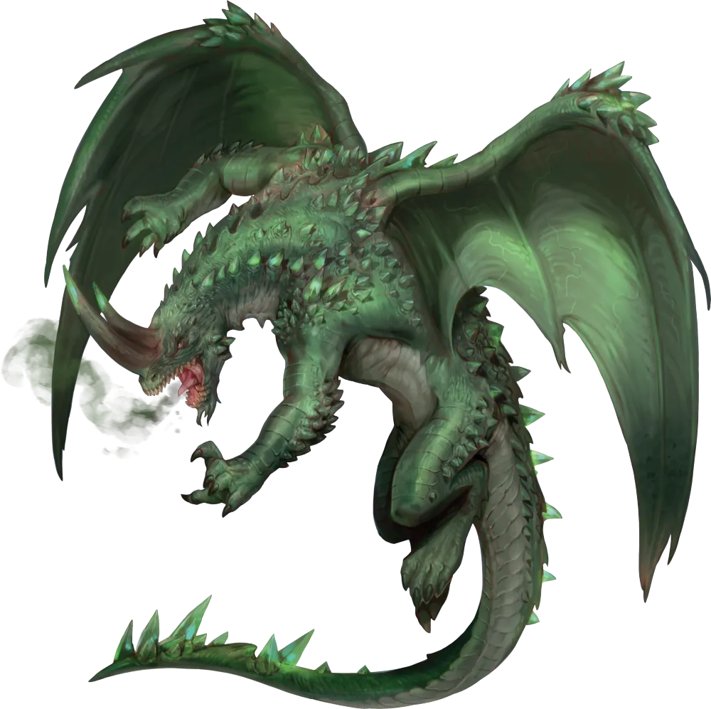

各年龄段数据卡
绿龙向来是学者、实验家、科学家、历史学家，更是包罗各色冷僻怪异知识的活体宝库――尤其是那些与它们偏执痴迷的学术课题息息相关的学问。而在这一行列之中，太古绿龙无疑是声名显赫的学术泰斗与领军巨擘：志趣相投的年轻绿龙或许会选择追随它们的爪印前行……又或许，某个血气方刚的后辈会毅然驳斥太古龙的学说，独自闯入一片完全属于自己的学术假说天地。 无论如何，不管是赞同还是反对，太古绿龙及其学术著作与见解都绝无可能被忽视。它们正是每一代新生绿龙赖以登高望远的学术巨人――唯有站在它们的肩膀之上，后辈方能一窥远方那无垠的可能性。 图书馆、学院、实验室、研究中心――太古绿龙会兴建起诸如此类的宏伟殿堂，作为铭刻自身执念与博学的丰碑。哪怕太古龙终有一日倒在劫掠成性的冒险者手下、失去了表面上的财宝宝库，它们真正的宝库与传承依然留存在这些神圣殿堂的书页之间。因此，只要这些殿堂本身未被摧毁，太古绿龙的记忆与遗泽便永远不会真正消亡。 在耗费大量光阴钻研深奥学术的同时，太古绿龙与自然的联结也愈发深厚紧密，尤其是与环绕其典型森林家园的繁茂草木。年轻绿龙固然能在自然林间悄无声息、不留痕迹且毫无阻碍地穿行，但唯有太古龙才能举重若轻地扭曲并改造周遭植物，将其化作困锁强敌、阻滞追兵的罗网陷阱。倘若一头太古绿龙已提前布置妥当，哪怕是其他巨龙，在面对遍地伸出藤蔓、枝条与根须死死缠住双翼将自己拖向地面的重重障碍时，也往往觉得追击这头猎物实在太过棘手费神。 当敌对的太古龙想要深入太古绿龙的内殿圣所发起挑战时，倘若不想一头撞进绿龙布下的重重机关诡计，往往必须先发制人地清理周边的繁茂林木。举例来说，一头太古红龙干脆可以把整片森林一把火烧个精光――要是那头绿龙为了阻止山火而主动现身，那就再妙不过了。 绿爪园艺许多太古绿龙都是天生的园艺师或造景巨匠。极少有绿龙是有意培养这项爱好的，绝大多数都是出于本能投身其中――它们发现打理花木能够澄澈思绪、凝聚专注，正是在苦思冥想棘手学术难题时让一双龙爪有事可做的绝佳消遣。闯入者最好留神脚下，免得一脚踩坏了太古绿龙心爱的名贵兰花！ |
 太古绿龙 |